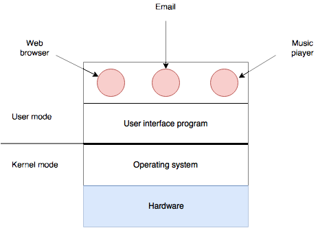

What Is an Operating System?
A Key Distinction: Kernel versus user mode.
Kernel:
- Can access any part of the machine.
- Can execute any instruction.
User:
- Accesses machine through the kernel.
- Blocked from executing some instructions.
Operating systems are:
- Huge
Windows: 70,000,000 lines of code!
Over 1000 volumes of large books.
- Complex
- Long-lived
UNIX was started in 1970.

Computers are like onions
The Operating System as an Extended Machine
The Operating System as Resource Manager
External Links
Homework
- Study lectures!